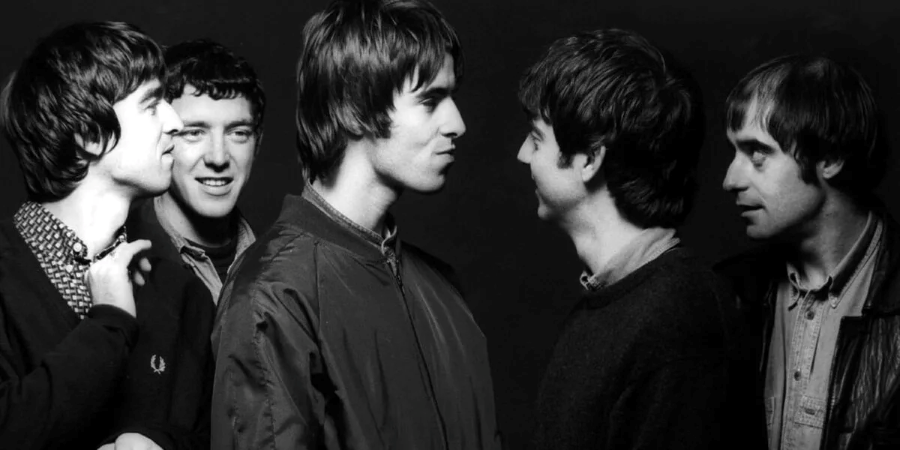
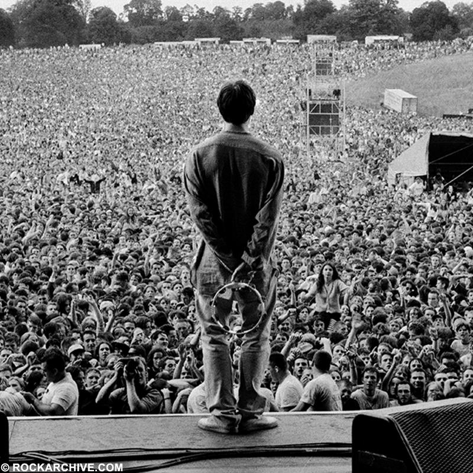

Os "beatles" da nova geração.

O Oasis surgiu em Manchester a partir da banda The Rain, com Liam Gallagher entrando como novo vocalista.
pouco depois, Noel Gallagher se juntou trazendo composições próprias e assumindo o controle criativo, estabelecendo a dinâmica intensa e frequentemente conflituosa entre os irmãos.
Em 1993, a banda conseguiu um contrato ao impressionar Alan McGee após um show no King Tut’s, na Escócia, e logo chamou atenção com os singles “Supersonic”, “Shakermaker” e especialmente “Live Forever”.
Com um som direto, melodias marcantes e atitude confiante, o Oasis lançou em 1994 o álbum Definitely Maybe, que se tornou a estreia mais rapidamente vendida do Reino Unido; apesar das brigas internas, a banda cresceu rapidamente e se firmou como um dos pilares do britpop, iniciando sua trajetória rumo ao sucesso mundial.
“Nós somos a maior banda do mundo.”
Noel Gallagher
"Maybe I just wanna fly
Wanna live, I don't wanna die
Maybe I just wanna breathe
Maybe I just don't believe
Maybe you're the same as me
We see things they'll never see
You and I are gonna live forever"
Oasis - Live Forever

]Saiba mais sobre a bandaclicando aqui